Grasping and Object Reorientation for Autonomous Construction of Stone Structures
한줄 요약 — 최대 1.8 m aperture의 굴착기 2-jaw gripper가 irregular boulder를 force-closure CNN, LiDAR collision map, alignment·enclosure·centroid cost로 파지하고 필요 시 flipping zone에서 재정렬하도록 해, 445~2425 kg 돌 145개로 10×4×2 m 건식 석벽을 만들며 443회 중 364회 grasp success와 전 placement 완료를 달성했다.
1.연구 배경 및 동기
수백 kg 비정형 석재를 목표 자세로 잡고 다시 놓는 architectural-scale manipulation
현장 자연석과 rubble을 최소 가공해 retaining wall, river bank reinforcement, coastal protection 같은 구조물을 만들면 재료 운송과 가공의 환경 부담을 줄이고 위험·원격 지역에서 현장 자원을 활용할 수 있다. 그러나 모든 돌의 형상과 자세가 다르고 벽 내부 placement space가 좁아, 규격 부품 조립처럼 known edge와 fixture를 전제로 grasp를 계획할 수 없다. 수백 kg stone을 다루는 굴착기는 산업용 articulated arm보다 end-effector orientation 범위도 제한된다.
assembly planner가 안정한 wall pose를 정해도 그 자세의 grasp가 현재 ground나 이웃 돌과 충돌할 수 있고, 현재 stone orientation을 보지 않아 direct reach가 불가능할 수 있다. 논문은 LiDAR map과 mesh에서 force-closure 후보를 만들고 pick/place collision과 task cost를 거른다. 불가능하면 physics stable pose와 flipping zone을 거쳐 HEAP로 수백 kg boulder 145개를 배치한다.
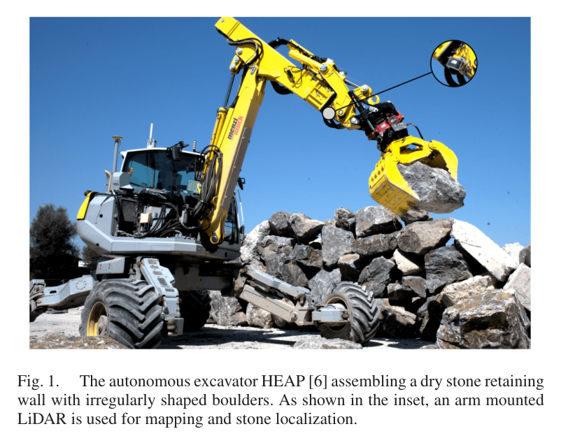
원문 Figure 1 · PDF p.1 — Fig. 1. The autonomous excavator HEAP [6] assembling a dry stone retaining wall with irregularly shaped boulders. As shown in the inset, an arm mounted LiDAR is used for mapping and stone localization.
선행 연구의 한계
analytical grasp optimization은 exact object model·pose를 요구하고 non-convex natural stone에서 안정성·충돌 constraint를 함께 풀기 어렵다.
RGB-D grasp detector는 outdoor 대형 scene과 cluttered stone contact에 바로 적용하기 어렵다.
일반 regrasp·pivoting은 제한된 굴착기 workspace와 수백 kg 비정형 stone에 부적합하다.
assembly planner가 current stone orientation을 무시해 목표 wall pose는 안정하더라도 direct collision-free placement grasp가 존재하지 않을 수 있다.
이 연구의 기여
LiDAR scene map, localized stone mesh, target placement object를 합친 grasp planning point cloud와 collision constraint를 구성했다.
surface local frame에서 대량 grasp hypothesis를 생성하고 four-layer CNN force-closure, pick collision, alignment·enclosure·centroid cost로 실행 grasp를 선정했다.
12 t HEAP의 145 placement·76 reorientation으로 성공률·시간·assembly rate를 정량 평가했다.
2.방법론 및 시스템 구성
arm LiDAR LaserSLAM에 GNSS·IMU odometry와 ICP를 결합하고 self-points를 제거한다. 가려진 면은 localized stone mesh로 보완하며 centroid ray casting으로 충돌 여유가 큰 placement direction을 정한다.
surface local frame의 discrete orientation·jaw opening 후보를 CNN force closure와 pick/place collision로 거른 뒤 alignment·enclosure·centroid cost로 순위를 매긴다. direct grasp가 없으면 physics settling의 stable pose를 찾아 flipping zone에서 1.5 m lift·rotate·settle하고 다시 계획한다.
처리 파이프라인
1
LiDAR scene·object map
arm LiDAR LaserSLAM으로 wall·ground·stones를 map하고 self-points를 제거한다. excavator GNSS-IMU odometry와 ICP constraint를 결합하며 occluded 부분은 localized reconstructed mesh로 보완한다.
2
surface grasp sampling
stone surface point마다 neighborhood normal matrix eigenvector로 curvature-aligned frame을 만들고 y·z discrete rotation, jaw opening, approach translation으로 10개 orientation 후보를 생성한다.
3
force-closure·collision filtering
four-layer CNN이 2-finger force closure를 분류한 뒤 target placement와 actual pick location 모두에서 convex gripper collision을 검사한다. pick에서 모두 충돌하면 reorientation branch로 간다.
4
task-specific ranking
placement direction alignment cost가 낮은 50%·최소 40개, palm-centroid enclosure cost가 낮은 50%·최소 20개를 남기고 centroid line distance가 최소인 grasp를 고른다.
5
physics intermediate pose
nominal placement grasp가 top approach가 되도록 stone mesh를 ground 위에서 settle시켜 stable intermediate pose를 찾는다. collision·reach가 실패하면 orientation perturbation을 반복한다.
원문 Figure 2 · PDF p.3 — Fig. 2. The grasp pose planning and object reorientation pipeline.
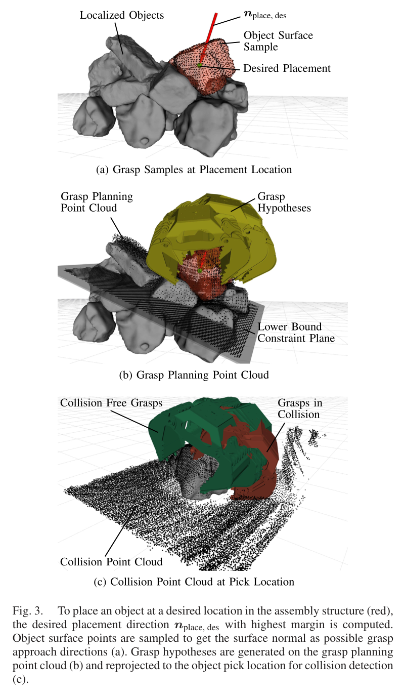
원문 Figure 3 · PDF p.3 — Fig. 3. To place an object at a desired location in the assembly structure (red), the desired placement direction nplace, des with highest margin is computed. Object surface points are sampled to get the surface normal as possible grasp approach directions (a). Grasp hypotheses are generated on the grasp planning point cloud (b) and reprojected to the object pick location for collision detection (c).
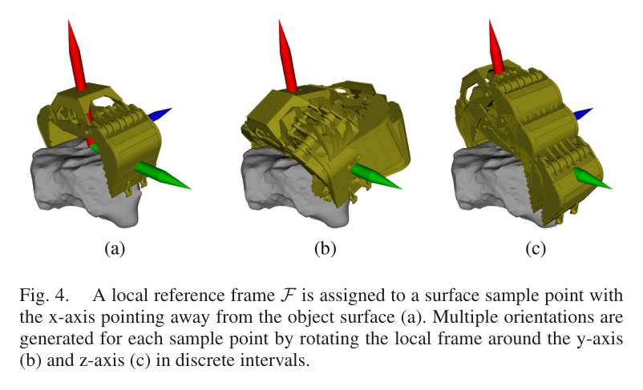
원문 Figure 4 · PDF p.4 — Fig. 4. A local reference frame F is assigned to a surface sample point with the x-axis pointing away from the object surface (a). Multiple orientations are generated for each sample point by rotating the local frame around the y-axis (b) and z-axis (c) in discrete intervals.
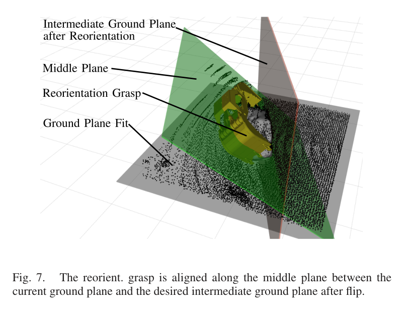
원문 Figure 7 · PDF p.5 — Fig. 7. The reorient. grasp is aligned along the middle plane between the current ground plane and the desired intermediate ground plane after flip.
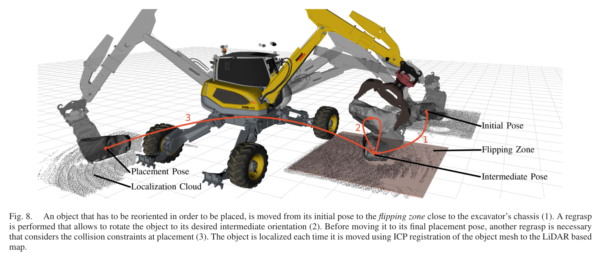
원문 Figure 8 · PDF p.6 — Fig. 8. An object that has to be reoriented in order to be placed, is moved from its initial pose to the flipping zone close to the excavator’s chassis (1). A regrasp is performed that allows to rotate the object to its desired intermediate orientation (2). Before moving it to its final placement pose, another regrasp is necessary that considers the collision constraints at placement (3). The object is localized each time it is moved using ICP registration of the object mesh to the LiDAR based map.
3.핵심 기술
LiDAR map과 complete mesh를 결합한 collision cloud
arm LiDAR LaserSLAM은 outdoor scene을 누적하고 가려진 면은 reconstructed mesh로 채운다. 먼저 target placement에서 grasp를 만들고 3.6 m ROI와 constraint plane으로 collision cloud를 줄인 뒤 actual pick을 역검사한다.
arm-mounted LiDAR LaserSLAM
GNSS-IMU odometry와 ICP scan constraint
scene map+localized mesh+target mesh 결합
1.8 m aperture 기반 ROI crop
force closure 뒤 작업 맥락을 반영한 계층 ranking
CNN force-closure 뒤 pick collision과 placement alignment를 검사하고 enclosure·centroid offset을 50%·minimum-count 단계로 줄인다. 성공·slip cost가 겹치므로 ranking만으로 부족해 recovery가 필요하다.
four-layer CNN force-closure
placement와 pick 양쪽 collision
alignment→enclosure→centroid distance 계층 필터
physics settling을 이용한 한 번의 큰 reorientation
direct grasp가 없으면 target grasp가 top approach가 되는 physics stable pose를 찾는다. 제한된 joint range 때문에 chassis-side flipping zone에서 middle-plane grasp로 잡아 한 번의 lift·rotation으로 재정렬한다.
stable intermediate pose physics simulation
current·intermediate ground plane middle grasp
chassis-side flipping zone
1.5 m lift 후 rotate·settle
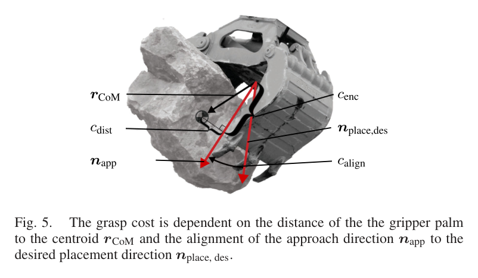
원문 Figure 5 · PDF p.4 — Fig. 5. The grasp cost is dependent on the distance of the the gripper palm to the centroid rCoM and the alignment of the approach direction napp to the desired placement direction nplace, des.
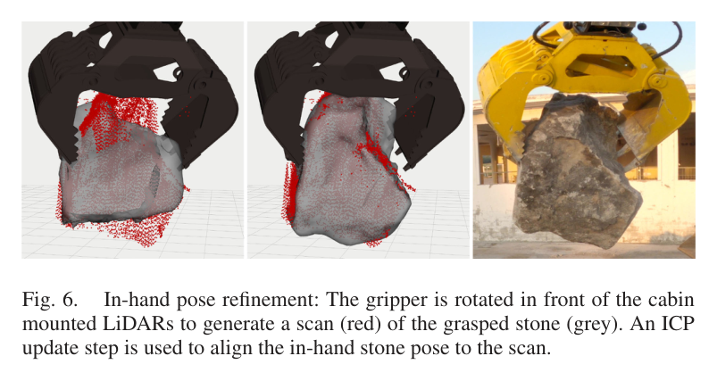
원문 Figure 6 · PDF p.5 — Fig. 6. In-hand pose refinement: The gripper is rotated in front of the cabin mounted LiDARs to generate a scan (red) of the grasped stone (grey). An ICP update step is used to align the in-hand stone pose to the scan.
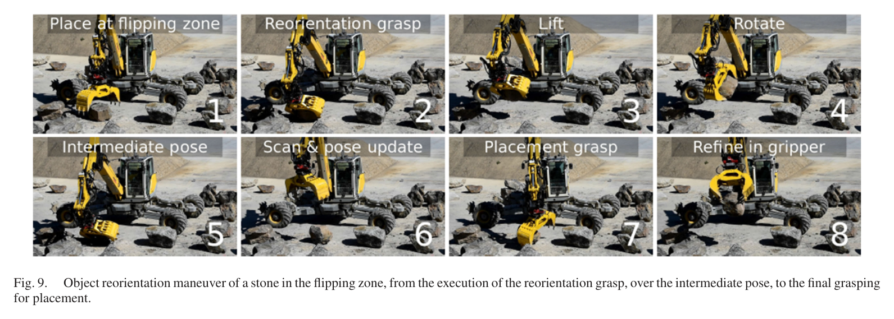
원문 Figure 9 · PDF p.6 — Fig. 9. Object reorientation maneuver of a stone in the flipping zone, from the execution of the reorientation grasp, over the intermediate pose, to the final grasping for placement.
4.실험 결과
실험 환경·장비·데이터
HEAP는 highly customized Menzi Muck M545 12 t, 25 DoF walking excavator이며 높이 9 m까지, 최대 3000 kg object를 자유 조작할 수 있다.
목표 구조는 약 10 m×4 m×2 m double-faced dry-stone wall이고 boulder 질량은 445~2425 kg, 평균 1030 kg이다.
여러 날 동안 돌을 주변에 dump·spread하고 grasp·scan·mesh reconstruction·assembly planning·placement를 반복했다.
실험 프로토콜
각 grasp에서 surface point 2000개와 point당 orientation 10개를 sample한다.
direct placement가 없으면 flipping zone에서 reorientation하고, 매 relocation 뒤 arm LiDAR ICP로 object world pose를 갱신한다.
grasp attempt는 stone을 들어 새 위치에 놓을 수 있으면 success, closing·lifting 중 빠지면 slip으로 label한다.
trained dry-stone mason의 1~2 m²/day가 assembly rate의 사람 기준으로 언급된다.
direct placement sequence와 reorientation-required sequence의 no-slip 비율을 내부 비교한다.
평가 지표
grasp success·slip과 placement당 attempt
direct·reorientation no-slip 비율
planning runtime·reorientation 비율·wall rate
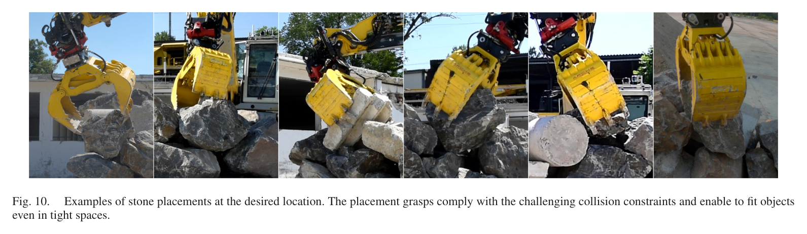
원문 Figure 10 · PDF p.8 — Fig. 10. Examples of stone placements at the desired location. The placement grasps comply with the challenging collision constraints and enable to fit objects even in tight spaces.
핵심 결과 해석
145개 placement 중 76개(52.4%)가 reorientation을 요구했다. 443 grasp attempt 중 364회(82.2%)가 새 위치에 놓은 성공, 79회가 slip이었다. 성공은 wall 145, flipping-zone 76, reorientation 77, out-of-wall 66회였다.
reorientation은 여러 grasp를 거치므로 no-slip placement sequence 비율이 direct의 60.9%보다 낮은 42.1%였다. 그럼에도 slip 뒤 pose update와 regrasp를 반복해 145 placement를 모두 완료했고 stone 하나당 평균 3.06 grasp attempt가 들었다. 약 3 m²/day assembly rate는 숙련 mason의 1~2 m²/day보다 높지만 robot은 safety 때문에 감속했으며, pose update·regrasp가 cycle time을 늘렸다.
planning은 평균 16.08±2.26 s로 generation 11.62 s, force closure 4.04 s, collision·cost 0.42 s였다. success와 slip cost가 크게 겹쳤고 closing asymmetry와 cone stone의 밀려남이 주요 slip 원인이었다.
정량 결과
평가 항목
정량 결과
조건·맥락
원문 근거
grasp attempt 성공률
364/443 = 82.2%; slip 79
145 wall placement 전체 grasp attempt
PDF p.7
reorientation 비율
76/145 = 52.4%
direct collision-free grasp가 없어 intermediate pose가 필요했던 stone
PDF p.7
placement당 grasp attempt
평균 3.06회
slip recovery 포함해 145 placement 모두 완료
PDF p.7
grasp planning 시간
16.08±2.26 s
generation 11.62 s, force closure 4.04 s, pick collision·cost 0.42 s
PDF p.7
wall assembly rate
약 3 m²/day
숙련 dry-stone mason 참고치 1~2 m²/day
PDF p.7
stone 질량
445~2425 kg, 평균 1030 kg
10×4×2 m wall에 사용한 irregular boulder
PDF p.7
실패 사례와 경계조건
closing 비대칭과 surface 오차가 stone을 움직여 slip을 유발했다.
cone stone은 closing force로 gripper 밖으로 밀렸다.
reorientation no-slip sequence는 42.1%로 direct 60.9%보다 낮았다.
5.한계 및 향후 연구
현재 한계
assembly planner가 현재 stone orientation을 고려하지 않아 placement의 절반 이상이 시간 소모가 큰 reorientation을 요구했다.
grasp success가 82.2%여서 slip detection·relocalization·regrasp 없이는 전체 공정을 완료할 수 없다.
mesh·LiDAR에 의존하고 flat-ground flipping만 실증했으며 human이 wall-collapse 위험을 판단한 사례가 있다.
향후 연구
assembly planner가 current object pose를 placement search에 포함해 direct grasp 가능성을 높이고 reorientation 수를 줄인다.
slip 시 완전히 내려놓고 재계획하기보다 사람이 하듯 closing 중 gripper pose를 조금씩 조정하는 online grasp adaptation을 개발한다.
force·pressure sensing으로 contact·slip을 관측하고 sampling 11.62 s 병목을 줄인다.
uneven terrain physics와 online flipping zone으로 reorientation 범위를 넓힌다.
수백 kg stone 145개 배치를 모두 완료했고 443 grasp 중 82.2%가 성공했으며 wall construction은 약 3 m²/day였다.
한계는?
52.4%가 reorientation을 요구하고 slip·mesh 오차·human safety 판단 때문에 완전 자율성과 cycle time이 제한된다.
#작업·궤적계획#환경인식#force-closure 파지#점군·mesh 처리#물리 시뮬레이션 재정렬
나의 의견 / 우리 연구와의 연관성
global map·object mesh·collision·in-hand perception을 heavy pick-place로 연결한다. target placement grasp를 먼저 정하고 actual pick을 역검사하는 순서와 slip 뒤 place-down·relocalize·regrasp는 rubble·pipe 조작에도 적용할 수 있다.
excavator-mounted LiDAR와 object mesh를 결합해 outdoor clutter의 unseen surface까지 collision planning에 포함할 수 있다.
physics settling intermediate pose는 불규칙 rock·debris를 한 번의 큰 flip으로 reorient하는 heavy-machine primitive가 된다.
slip 뒤 place-down·relocalize·regrasp를 field manipulation recovery 상태기로 재사용할 수 있다.
7.전체 그림·표
본문 핵심 위치에 배치하지 않은 원문 Figure와 Table을 원문 페이지 순서로 수록한다.
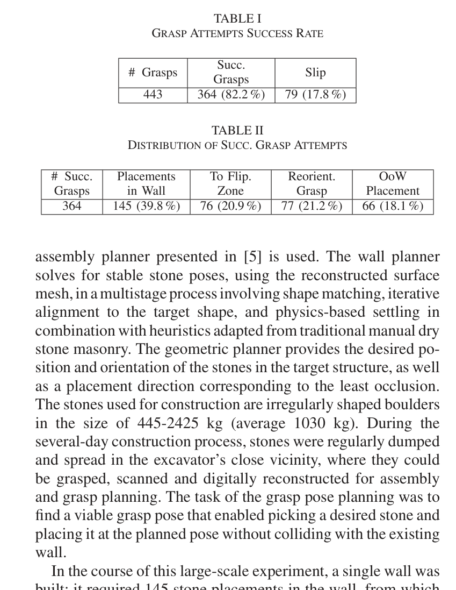
원문 Table I · PDF p.7 — TABLE I GRASP ATTEMPTS SUCCESS RATE
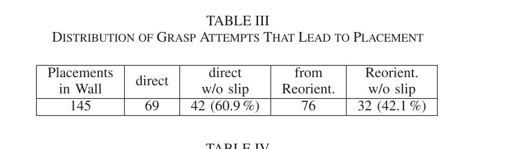
원문 Table III · PDF p.7 — TABLE III DISTRIBUTION OF GRASP ATTEMPTS THAT LEAD TO PLACEMENT
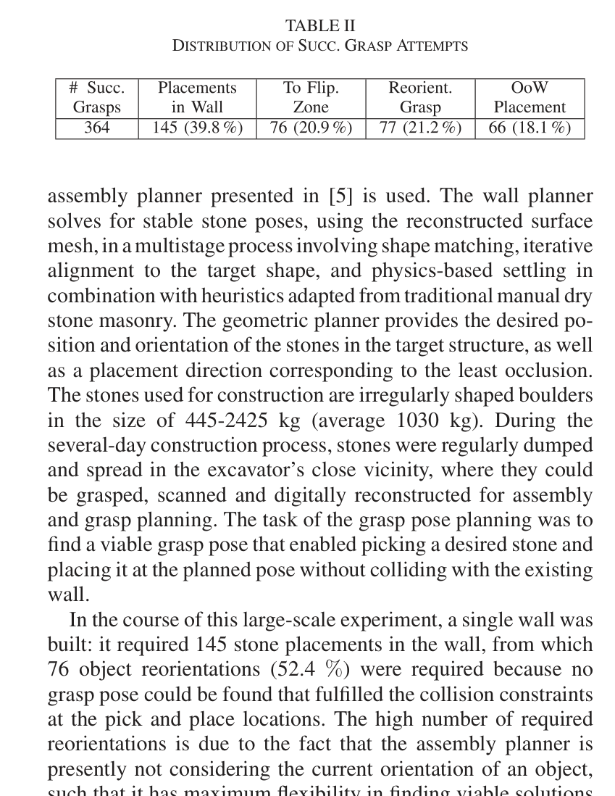
원문 Table II · PDF p.7 — TABLE II DISTRIBUTION OF SUCC. GRASP ATTEMPTS
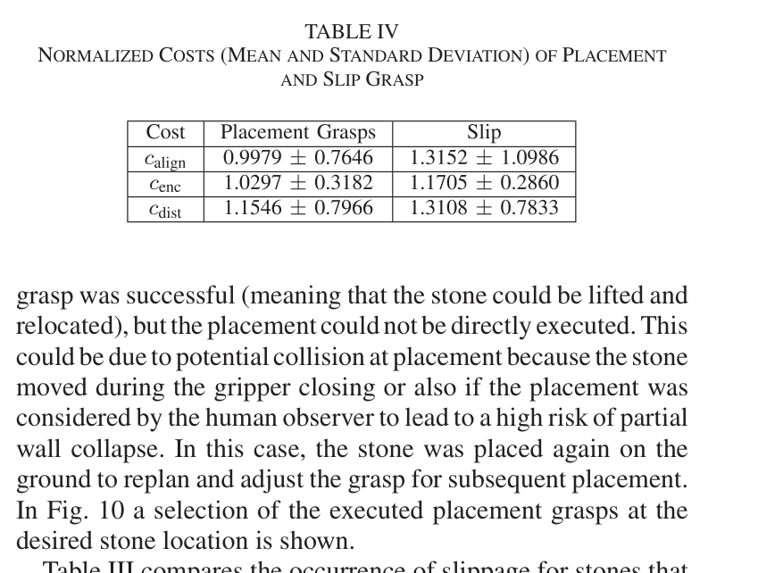
원문 Table IV · PDF p.7 — TABLE IV NORMALIZED COSTS (MEAN AND STANDARD DEVIATION) OF PLACEMENT
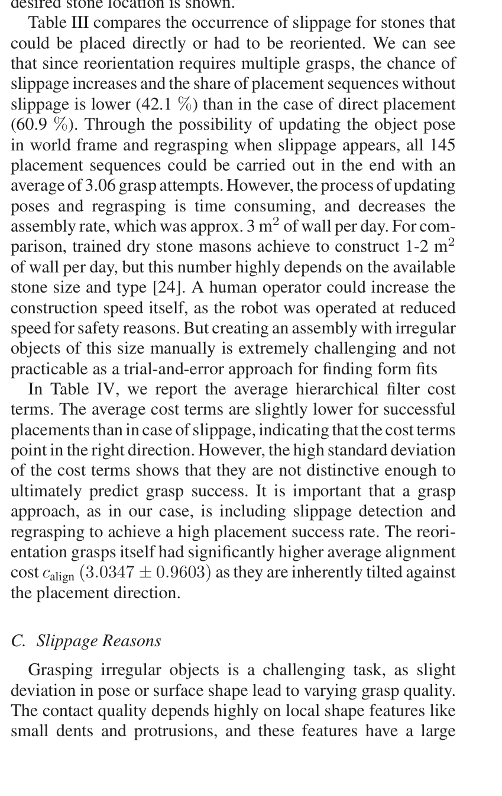
원문 Table III · PDF p.7 — Table III compares the occurrence of slippage for stones that could be placed directly or had to be reoriented. We can see that since reorientation requires multiple grasps, the chance of slippage increases and the share of placement sequences without slippage is lower (42.1 %) than in the case of direct placement (60.9 %). Through the possibility of updating the object pose in world frame and regrasping when slippage appears, all 145 placement sequences could be carried out in the end with an average of 3.06 grasp attempts. However, the process of updating poses and regrasping is time consuming, and decreases the assembly rate, which was approx. 3 m2 of wall per day. For com- parison, trained dry stone masons achieve to construct 1-2 m2